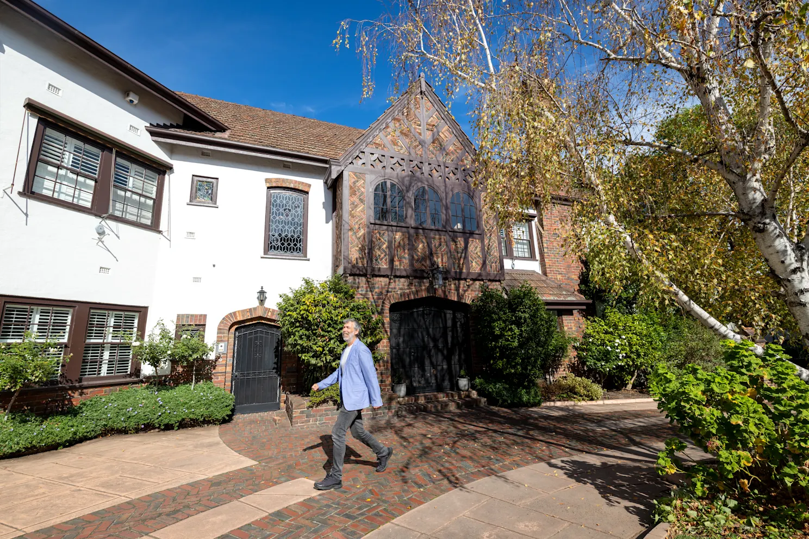

Shouldn't have had that almond croissant for breakfast? Get out of the office for a pacy stroll through the Paris end of Melbourne. Explore the architecture from the opulence of Treasury to the geometric modernism of Collins Place.
Book on TryBooking →